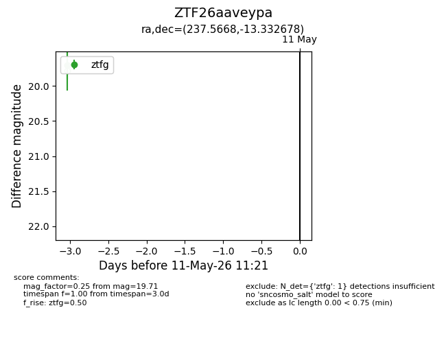
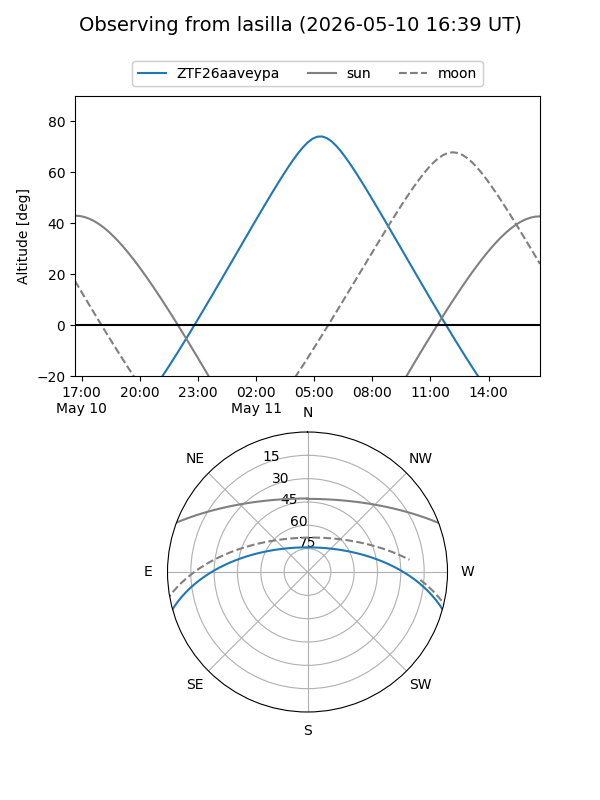
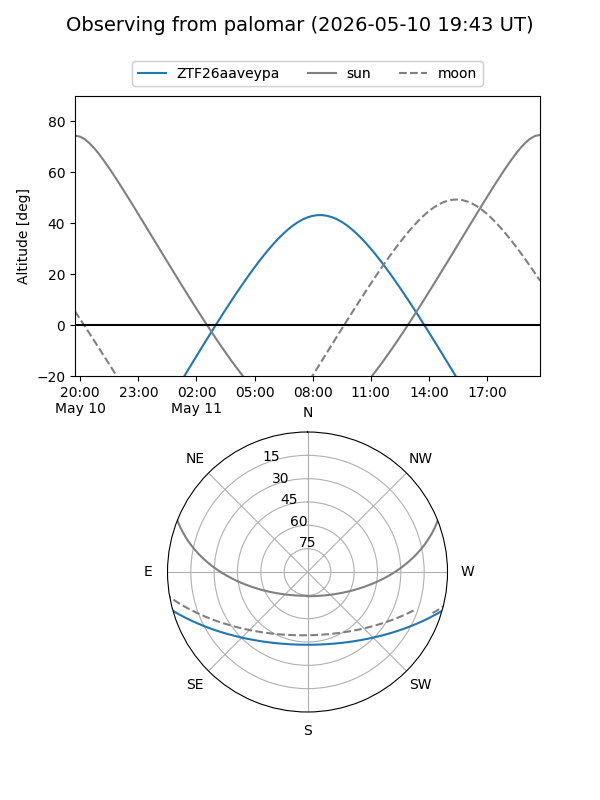

ZTF26aaveypa
Target ZTF26aaveypa at 2026-05-11 11:24
Aliases and brokers:
FINK: link
Lasair: link
ALeRCE: link
alt names
ZTF26aaveypa (ztf,fink_ztf)
Coordinates:
equatorial (ra, dec) = 237.5668,-13.33268
equatorial (HMS+DMS) = 15:50:16.02,-13:19:57.64
galactic (l, b) = (355.6793,+30.68537)
Flags:
Photometry:
last ztfg=19.71
1 ztfg detections
Lightcurve

Visibility


Additional plots